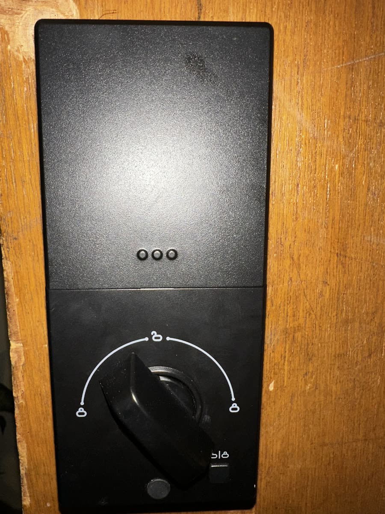
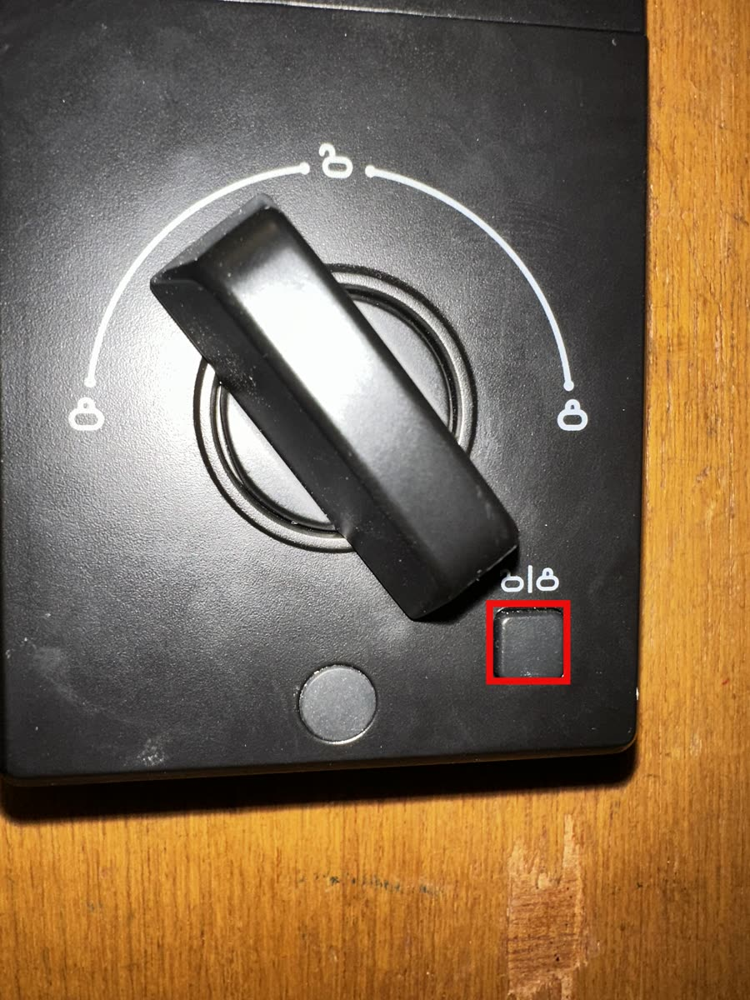
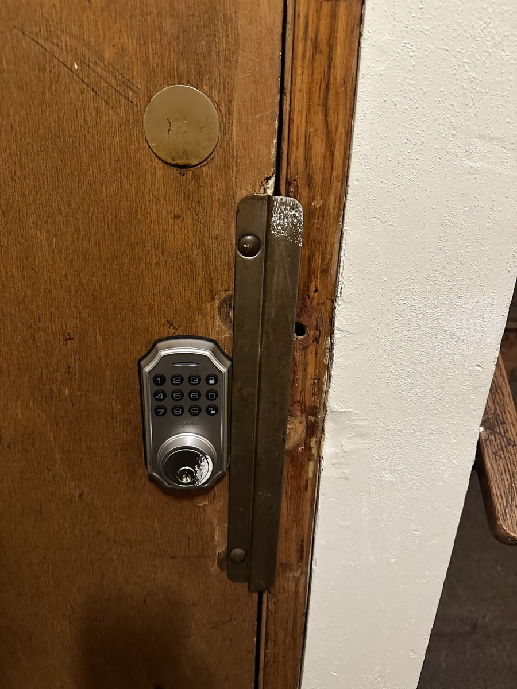
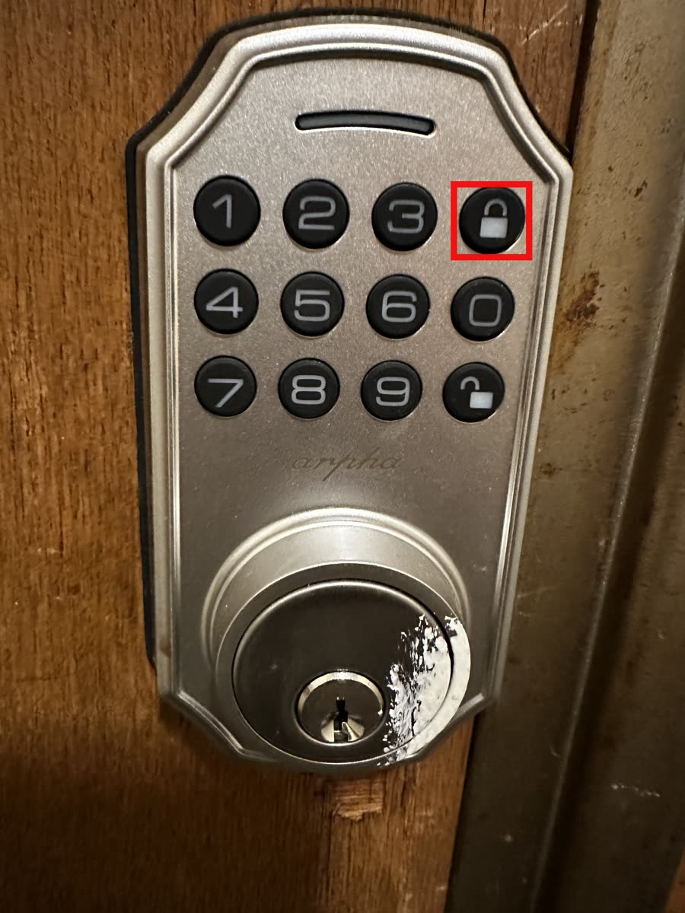

Locking the basement door
6626 N Bourbon St (Units 1 to 8), Milwaukee. For everyone who uses the basement: tenants, owners, occupants and their guests. The basement front door must be locked every time you leave the basement. It locks from both sides.
1Inside the basement: press the tiny lock button
Before you go out, press the small square button at the bottom right of the black panel (marked with two little padlocks). Do not touch the knob.


2Step out and push the door shut
Go out and push the door until it is fully closed against the frame. Once the door is closed, the lock throws the bolt by itself: you may wait for it to lock on its own if you prefer, and still do step 3.

3Outside: press the lock key on the keypad
On the silver keypad, press the closed padlock key (top right). While the lock is engaging, push lightly on the door so the bolt slides in easily.

4Check it: pull on the door
Pull on the door. It must not open. If it opens, push it shut and press the lock key again, then pull again. If it still will not lock, do not walk away: call or email the office right away so it can be fixed.
Every time, in short
- Inside: press the tiny square button (bottom right). Never the knob.
- Step out and push the door shut.
- Press the padlock key on the keypad and push lightly on the door while it locks.
- Pull on the door to make sure it is locked.
$215 for each time the door is left unlocked
- This applies to the 6626 building basement door. Anyone who leaves it unlocked is charged $215 per occurrence. There is no limit: each time is a new charge.
- The charge is due from the date it is charged.
- Tenants: the charge is added to your account. Your payments pay your rent first, and then any open door charge, before anything else (such as late fees). An unpaid door charge is a breach of your rental agreement and will lead to an eviction if it is not paid.
- Unit 6, and Units 1 and 7 (the owner lives there): the charge goes to the unit owner's association account as a ROCA1 fine, with the usual written notice and the right to ask for a hearing, and it is paid before association dues.